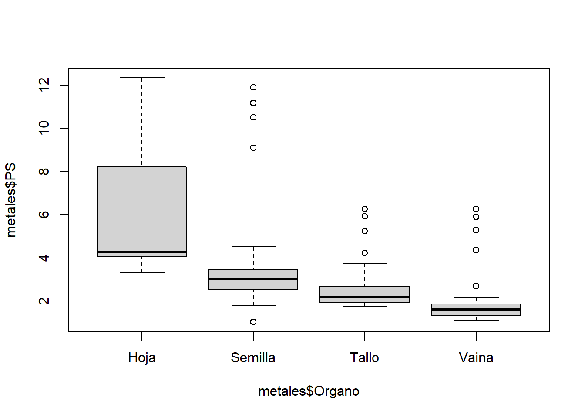
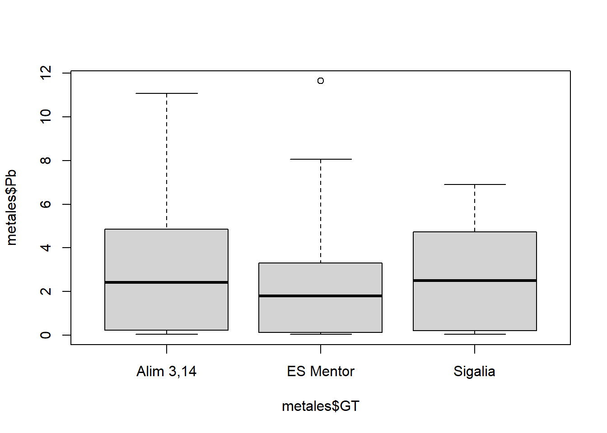
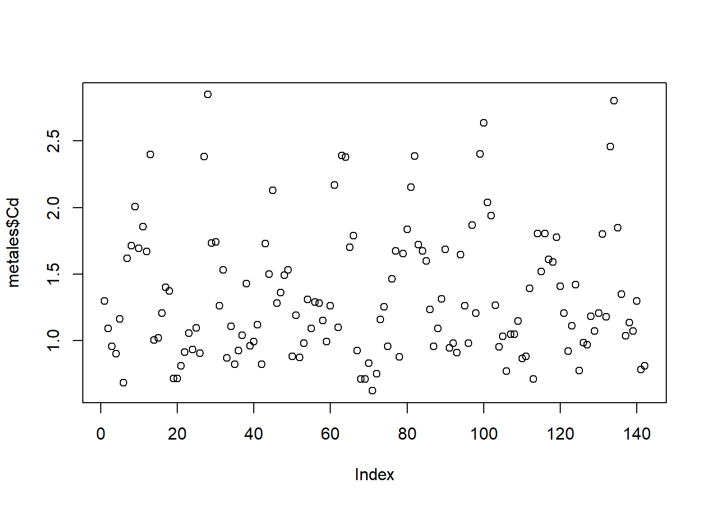
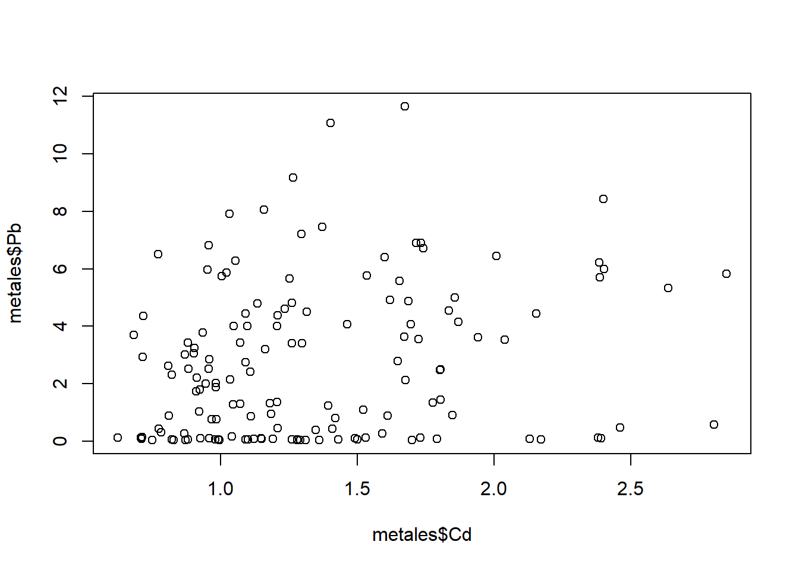

# Librerías ------Unidad 1. Introducción a R y RStudio
El lenguaje R
R es un lenguaje de escritura propio. Como todo lenguaje, tiene la gran virtud de que permite la comunicación a través de él, se puede intercambiar, podemos “hablarlo” en todas partes del mundo, compartir scripts con colegas y mostrarles cómo analizamos los datos. Sin embargo, su principal virtud es también su kryptonita ya que, como todo lenguaje, tiene muchos modismos. Cada persona desarrolla su propia forma de escritura, arma los scripts como le parece conveniente, entendible, práctico. Uno mismo a lo largo del tiempo va perfeccionando sus propios escritos, corrigiendo lo antes hecho, reescribiendo con un estilo más refinado o más avanzado.
Mi reflexión a este respecto es que la experiencia con el software es dinámica, aquí no se pretende mostrar una receta cerrada que no se puede modificar (ni mucho menos), sino simplemente acercar el programa a aquellos que aún no lo conocen y permitirles dar los primeros pasos para luego iniciar su propio camino.
Ventajas y desventajas de R
Por supuesto este apartado es totalmente subjetivo y (al igual que todo este escrito) está enteramente marcado por mi experiencia personal. La principal desventaja salta a la vista: hay que aprender un lenguaje nuevo de escritura. De esta desventaja se desprende su principal limitación: requiere tiempo aprenderlo. El uso de R requiere tener paciencia, leer, aprender a utilizarlo, frustrarse, reintentar, googlear buscando ayuda, etc. Por otra parte, la flexibilidad de escritura a veces dificulta el entendimiento. Finalmente algo que puede parecer una desventaja (que ya veremos que no lo es) es que en algunos casos puede llevarnos bastante tiempo llegar a un gráfico aceptable de acuerdo a nuestro requerimientos, gráfico que a simple vista pareciera haber sido mucho más rápido hacerlo en otro software ya conocido (como excel).
De ahí en más, presenta muchas virtudes:
- En primer lugar es software libre, al acceso de todos y multiplataforma.
- Se usa en investigación en todas partes del mundo, lo que nos permite realizar intercambios con otros investigadores, mandar scripts a nuestros directores, colegas, consultar análisis de otros.
- En lo personal, nos facilita seguir paso a paso cómo analizamos nuestros propios datos. Pongamos por caso que luego de 2 años queremos revisar unos datos que ya habíamos analizado y que nos quedaron colgados…acá podemos ver paso a paso todo lo que hicimos (también es cierto que si seguimos avanzando en el programa, nuestra forma de escritura habrá mutado, pero eso no lo hará menos entendible).
- Otra ventaja, relacionada a la anterior, es la posibilidad de introducir comentarios en nuestros scripts. Todo lo que aparezca a la derecha del signo
#en una línea no formará parte de la corrida. Esto nos permite agregar anotaciones, incluso resultados, hacernos recordatorios, silenciar partes del script que no queramos que se ejecuten, etc. - La esencia de R es la capacidad de repetición. Retomando lo que mencioné como una supuesta desventaja (pero que no lo era), una vez que logramos un gráfico (puede ser también un comando, pero vale el ejemplo) que estéticamente nos agrada, es muy sencillo extrapolar esa apariencia a otro gráfico, aún de diferente tipo. Por lo tanto, todo ese tiempo que nos llevó armarlo, es inversión y aprendizaje para que la siguiente vez todo sea más rápido.
- El uso de funciones: relacionado al ítem anterior, y una vez que tengamos algo de manejo, podemos armar las funciones que nosotros queramos reuniendo los análisis que queramos ver y simplificar los comandos para que en una sola línea generemos mucha información.
Instalación de R
En windows, se debe descargar la última versión de R desde su web (https://cran.r-project.org/bin/windows/base/), e instalarlo como cualquier otro programa.
RStudio
RStudio es un software que nos va a permitir trabajar de un modo más amigable con R (que de forma nativa se utiliza en un entorno tipo terminal de programación). El programa es de uso libre y se descarga desde la web oficial (https://posit.co/download/rstudio-desktop/). Una vez que instalamos el programa y lo abrimos, nos ofrece muchísimas posibilidades. En este taller simplemente vamos a ver su uso básico.
Al abrir el programa lo primero que destaca es que se encuentra dividido en 4 ventanas:
Ventana 1 - Script de trabajo: arriba a la izquierda. En ella abriremos y editaremos nuestros scripts de trabajo. A medida que se escriben las líneas para ejecutarlas debemos posicionarnos en ella (o seleccionarla) y correrlas (Run, arriba a la derecha, o más fácil Ctrl + r).
Ventana 2 - consola: se ubica abajo a la izquierda. En ella se nos muestra el R propiamente dicho. Todo lo que nosotros ejecutamos en la ventana 1 se corre en esta segunda ventana, donde se nos muestra el resultado de nuestra corrida. Si se quiere se puede escribir directamente en ella, pero lo que hagamos no quedará guardado en nuestro script de trabajo.
Ventana 3 - objetos e historial: arriba a la derecha. Aquí podemos visualizar (en la pestaña Environment) todos los objetos, bases de datos, funciones, etc. que hayamos importado o creado. Es muy importante ya que nos permite tener en vista nuestro entorno de trabajo (que es una funcionalidad con la que el R nativo no cuenta, uno debe memorizar los objetos creados). Si se tilda en alguno de los objetos, es equivalente a ejecutar el comando
View(), y nos permite visualizar en forma de tabla nuestras bases de datos (se abren en la ventana 1). Contamos aquí con una opción gráfica para importar nuestras bases de datos, pero en este curso lo haremos directamente con código. También contamos con una escoba que nos permite borrar todos los objetos que tengamos. La segunda pestaña History nos permite precisamente ver el historial de corridas que hayamos hecho. Allí podemos revisar comandos que ya ejecutamos y queremos repetir.Ventana 4 - gráficos, paquetes y ayuda: abajo a la derecha. Usaremos 3 de las pestañas:
- Plots: aquí visualizaremos todos los gráficos que vayamos generando. Nos permite mediante las flechas de arriba a la izquierda ir viendo también los gráficos anteriores. El icono Zoom nos facilita la visualización externa del gráfico que estemos viendo. Además presenta opciones de exportación.
- Packages: aquí podemos visualizar la lista completa de paquetes que tenemos instalados. Si tildamos uno lo activamos (equivalente al comando
library, ver más adelante). Si tildamos en Install podemos agregar nuevos paquetes que estén en el CRAN (base de datos de librerías). - Help: como bien dice el nombre es la ventana de ayuda. Súper útil y de consulta constante. Allí podemos ver las descripciones que escribieron los creadores de cada función y/o paquete que usemos.
Como se ve RStudio nos permite realizar diversas acciones de forma gráfica, sin necesidad de utilizar código. Mi postura en general es dejar escrito en nuestro script la mayor cantidad de pasos posibles, ya que todo lo que hagamos de forma gráfica no nos queda disponible cuando volvamos a ver nuestro archivo. En este sentido, la instalación de paquetes o las búsquedas de ayuda no es algo que necesitemos en un futuro en nuestro script y podemos hacerlo de forma gráfica. Pero, contrariamente, la carga de la base de datos, paquetes, exportación de figuras, nos resultará de utilidad dejarlo plasmado en el escrito.
RStudio incluye un infinidad de opciones extra que no hacen al objetivo de este curso. Para usos más avanzados es recomendable revisar la página web de los creadores, que es muy completa e incluye muchas utilidades y tutoriales. También se encuentra mucha ayuda en la pestaña Help.
Script de trabajo
En este apartado comenzaremos propiamente a desarrollar un script de trabajo. Iremos viendo paso a paso como avanzar en su armado, desde la carga de las librerías, introducir la base de datos y el manejo de la misma, el análisis de los datos hasta la visualización gráfica de los mismos.
Lo primero que hay que hacer un vez ingresados en RStudio es crear un nuevo script (File -> New File -> R Script). Allí nosotros podremos ir desarrollando los comandos correspondientes.
Todo script de trabajo tiene una estructura similar, la que yo utilizo es:
- Carga de las librerías.
- Carga de la base de datos.
- Creación de las databases necesarias.
- Armado de las funciones necesarias (si es que las tuviéramos).
- Análisis de los datos separados por títulos.
Los títulos son marcas que hacemos para volver sencillamente a otras partes de nuestro script (tengamos en cuenta que fácilmente se superan las 1000 líneas). Para introducir un título (o marcador) colocamos la palabra clave como un comentario y agregamos una serie de signos - a la derecha. Por ejemplo:
A partir de este momento podemos ver nuestros títulos en 2 lugares: en la parte inferior izquierda de la ventana 1 o en la parte superior derecha de la misma ventana en el icono con la leyenda Outline. Esta estructuración, insisto, es muy útil para movernos dentro del documento sin perder mucho tiempo buscando algún comando. A su vez, si introducimos más # al comienzo, se generan títulos de un nivel inferior.
Instalación y carga de las librerías
R se maneja en base a paquetes (o librerías) que contienen las funciones que queramos utilizar. Como base R trae pre-instalados una serie de paquetes que nos sirven para realizar gran cantidad de aplicaciones. Sin embargo, es muy usual que prefiramos usar otras funciones no disponibles en la base.
Para instalar una librería debemos ejecutar el código
install.packages("nombre del paquete")La instalación de paquetes debemos realizarla una única vez. Como se mencionó al describir la Ventana 4, también podemos instalar los paquetes de un modo gráfico en la pestaña Packages de RStudio.
Cada vez que ingresamos a RStudio debemos cargar nuestras librerías a utilizar. Para cargar una librería utilizamos el código
library("nombre del paquete")Si queremos cargar varios paquetes, podemos ejecutar varios comandos library en una misma línea separándolos con “;”, y así cargar todos en una única línea de corrida (Ctrl + r). Por otro lado, si bien uno puede tener un conjunto de paquetes que utiliza habitualmente, no es recomendable cargar de más ya que muchas veces se solapan funciones y podemos tener alguna complicación.
Para el uso de este taller, instalaremos los paquetes agricolae, car, sciplot, patchwork, gridExtra , viridis y tidyverse. Este último incluye una serie de paquetes en su interior, que abarcan desde funcionalidades gráficas hasta opciones del manejo de datos.
Así podemos cargarlos todos de la siguiente manera:
library(agricolae);library(tidyverse);library(car)
library(sciplot);library(patchwork); library(gridExtra)
library(viridis)Carga de nuestros datos
Como para casi cualquier acción que queramos ejecutar en R, la carga de la base de datos puede hacerse de muchas maneras. En la ventana 3 se nos ofrece una opción gráfica (a través de “Import Dataset”).
De todas maneras, es recomendable hacerlo mediante código, para que cada vez que ingresemos podamos incorporar la base de datos de manera muy sencilla.
Establecer el directorio de trabajo
Lo primero que debemos hacer es establecer el directorio de trabajo. Para ello corremos el comando (con un directorio ejemplo):
setwd("D:/DATOS/R")Si queremos revisar en qué directorio nos encontramos, ejecutamos
getwd()[1] "D:/Documents/OneDrive/R/Taller R 2025 Doctorado/curso_graficos_ggplot/unidad_1"Ahora antes de ver cómo cargar la base de datos, haremos una breve explicación de como crear la base de datos.
Armado de la base de datos
Una vez más, aquí mostraré mi forma de armar las bases de datos, hay muchas..
La forma de la base de datos es la misma que se utiliza en otros software como Infostat. Debemos crear una columna por cada factor o variable que tengamos, y repetir el nivel del factor para cada unidad experimental (cada fila).
El formato en el que yo creo mis bases de datos es csv (archivo separado por comas). Para ello se exporta desde excel o calc el archivo en ese formato. El documento debe tener una única hoja con las base de datos limpia, es decir sin columnas o filas extras con comentarios, datos extra, etc. Por otro lado, es recomendable que los nombres de las columnas sean lo más cortos posibles, y que no tengan espacios. Otra recomendación es omitir el uso de tildes u otros caracteres especiales en cualquier parte del documento puede llegar a tener problemas según la codificación que usemos en RStudio. La más compatible es la UTF-8, que no suele generar problemas.
Resumiendo, la recomendación es que una vez que tenemos nuestra tabla (en excel por ejemplo) con los datos listos, copiarla y pegarla en un documento nuevo. Allí ver de simplificar los nombres de las columnas, también de los niveles de factores a utilizar. Guardar este nuevo documento como csv, si estamos en idioma español establecer para la separación de columnas “;”. Por supuesto, guardamos el archivo en el directorio de trabajo.
Para este curso utilizaremos inicialmente la base de datos “metals.csv”.
Cargando la base de datos
En este aparto, cabe destacar que R es un lenguaje orientado a objetos. Cargaremos nuestra base de datos como un “objeto” de R, al cual debemos asignarle un nombre. De ahí en más, cualquier acción que modifique nuestro “objeto” quedará guardada en el objeto mismo, pero no modificará nuestro archivo original (el csv en este caso). Para crear un objeto lo asignamos con “<-” (de forma rápida se escribe con Alt + -) o con el signo “=”.
Una primera forma de cargarla es mediante la función read.csv, por ejemplo:
metales <- read.csv("metales.csv")Como la base está en español, no se carga correctamente. Debemos corregir un par de parámetros:
metales <- read.csv("metales.csv", dec=",", sep=";")
lapply(metales, class) # vemos que crea factores$Pote
[1] "integer"
$GT
[1] "character"
$CO2
[1] "integer"
$ET
[1] "character"
$Organo
[1] "character"
$PS
[1] "numeric"
$Mn
[1] "numeric"
$Cu
[1] "numeric"
$Zn
[1] "numeric"
$Cd
[1] "numeric"
$Pb
[1] "numeric"
$SPAD
[1] "numeric"La función que yo más utilizo es la que viene con el paquete tidyverse, llamada read_csv. Si usamos read_csv2, toma la coma como separador decimal:
metales <- read_csv2("metales.csv")ℹ Using "','" as decimal and "'.'" as grouping mark. Use `read_delim()` for more control.Rows: 142 Columns: 12
── Column specification ────────────────────────────────────────────────────────
Delimiter: ";"
chr (3): GT, ET, Organo
dbl (9): Pote, CO2, PS, Mn, Cu, Zn, Cd, Pb, SPAD
ℹ Use `spec()` to retrieve the full column specification for this data.
ℹ Specify the column types or set `show_col_types = FALSE` to quiet this message.Vemos que en este caso nos mostró directamente la clase de cada columna, y que crea objetos tipo character en vez de factor.
En la ventana 3, nos aparecerán los objetos que incorporemos.
Caracterización de la base de datos
Para ver primeros datos y los nombres de las columnas ejecutamos los comandos:
head(metales)# A tibble: 6 × 12
Pote GT CO2 ET Organo PS Mn Cu Zn Cd Pb SPAD
<dbl> <chr> <dbl> <chr> <chr> <dbl> <dbl> <dbl> <dbl> <dbl> <dbl> <dbl>
1 1 ES Mentor 400 No Hoja 4.58 53.9 10.3 103. 1.30 7.22 29.5
2 2 ES Mentor 400 No Hoja 3.61 51.1 7.36 149. 1.09 2.75 21.5
3 3 ES Mentor 400 No Hoja 4.27 41.7 6.90 96.9 0.956 2.53 24.7
4 4 ES Mentor 400 Si Hoja 4.62 54.0 8.77 119. 0.901 3.05 22.6
5 5 ES Mentor 400 Si Hoja 4.68 51.2 6.64 108. 1.16 3.21 25.6
6 6 ES Mentor 400 Si Hoja 4.38 50.3 8.16 111. 0.682 3.69 22.8Para ver la tabla completa, se debe tildar en el nombre del objeto en la ventana 3. Aprovechando que tenemos la tabla a nuestra vista, daré aquí una breve descripción de los datos. La tabla cargada cuenta con datos de plantas de soja de 3 cultivares (o genotipos) diferentes: Alim 3,14, ES Mentor y Sigalia (todos en la columna GT). Estas plantas crecieron en cámaras climáticas con condiciones controladas de luz, temperatura, humedad y concentración de CO2. Las siguientes columnas de la base de datos son las siguientes:
CO2: es la concentración en la cual crecieron las plantas. Tiene dos niveles: 400 ppm y 550 ppm.
ET: estrés térmico. Algunas de las plantas fueron sometidas a estrés térmico en el periodo crítico de llenado de grano. Tiene dos niveles: Sí o No.
Órgano: refiere a si se trata de raíces, tallos, hojas, vainas o semillas.
PS: peso seco del órgano correspondiente.
Mn, Cu, Zn, Pb, Cd: concentración del metal en el órgano correspondiente en ppm.
SPAD: medición promedio de SPAD (verdor) en hojas a lo largo del desarrollo. Valor sólo válido para las hojas.
Además podemos ver un resumen de nuestra base o hacerle “preguntas” a R sobre la base de datos. Al escribir “$” a continuación de un objeto podemos ver las columnas individuales. Por ejemplo:
summary(metales) # resumen de la base Pote GT CO2 ET
Min. : 1.00 Length:142 Min. :400 Length:142
1st Qu.:10.00 Class :character 1st Qu.:400 Class :character
Median :18.50 Mode :character Median :475 Mode :character
Mean :18.46 Mean :475
3rd Qu.:27.00 3rd Qu.:550
Max. :36.00 Max. :550
Organo PS Mn Cu
Length:142 Min. : 1.030 Min. : 2.122 Min. : 2.568
Class :character 1st Qu.: 1.875 1st Qu.: 7.952 1st Qu.: 5.899
Mode :character Median : 2.720 Median :20.450 Median : 7.272
Mean : 3.561 Mean :24.086 Mean :10.582
3rd Qu.: 4.215 3rd Qu.:34.296 3rd Qu.:12.472
Max. :12.330 Max. :83.826 Max. :38.300
Zn Cd Pb SPAD
Min. : 13.41 Min. :0.623 Min. : 0.0340 Min. :20.27
1st Qu.: 43.06 1st Qu.:0.961 1st Qu.: 0.1308 1st Qu.:23.09
Median : 80.55 Median :1.207 Median : 2.1740 Median :25.84
Mean : 91.42 Mean :1.336 Mean : 2.7108 Mean :25.76
3rd Qu.:103.41 3rd Qu.:1.667 3rd Qu.: 4.4465 3rd Qu.:27.69
Max. :345.52 Max. :2.849 Max. :11.6470 Max. :32.24 is.double(metales$PS) # double indica numérico continuo[1] TRUEis.character(metales$GT)[1] TRUElevels(as.factor(metales$GT)) # para ver los niveles de un factor[1] "Alim 3,14" "ES Mentor" "Sigalia" levels(as.factor(metales$Organo))[1] "Hoja" "Semilla" "Tallo" "Vaina" Caracterización gráfica
En este caso haremos algunos gráficos sencillos para observar la distribución de nuestra base de datos. La función plot (y sus derivados, como en este caso boxplot) viene con R base y es la forma más rápida y sencilla de graficar.
boxplot(metales$PS~metales$Organo)
boxplot(metales$Pb~metales$GT)
plot(metales$Cd)
plot(metales$Pb~metales$Cd)



Manejo de la base de datos
Subdividir la base de datos
Algo muy común en el trabajo en R, es la necesidad de subdividir la base de datos para utilizar únicamente una parte de ella. Veremos un par de formas de hacerlo.
Con las funciones que incluye R base, utilizaremos subset. Por ejemplo para elegir solo las muestras del genotipo Alim 3,14:
ALIM <- subset(metales, metales$GT=="Alim 3,14")Y creamos un objeto que se llama ALIM, nuevamente mediante <-.
Otra forma de hacerlo es mediante el uso de pipes (%>%). Las pipes sirven para concatenar una serie de acciones para modificar una base de datos. En primer lugar se ubica la base a modificar y entre cada linea de comando %>% (Ctrl + Shift + m). Así, podemos crear la misma base de antes con filter:
ALIM <- metales %>% filter(GT == "Alim 3,14")Si queremos filtrar por más de un parámetro:
# en dos pasos
ALIM_VyS <- metales %>%
filter(GT == "Alim 3,14") %>% # se agrega a lo anterior
filter(Organo =="Vaina"| Organo =="Semilla")Seleccionar filas o columnas
En R base, el uso de [ ] sirve para seleccionar filas o columnas de una database, tal que data[filas,columnas]. En el entorno de dplyr utilizaremos la función select para columnas:
# seleccionar filas 1 a 3
metales[1:3,]# A tibble: 3 × 12
Pote GT CO2 ET Organo PS Mn Cu Zn Cd Pb SPAD
<dbl> <chr> <dbl> <chr> <chr> <dbl> <dbl> <dbl> <dbl> <dbl> <dbl> <dbl>
1 1 ES Mentor 400 No Hoja 4.58 53.9 10.3 103. 1.30 7.22 29.5
2 2 ES Mentor 400 No Hoja 3.61 51.1 7.36 149. 1.09 2.75 21.5
3 3 ES Mentor 400 No Hoja 4.27 41.7 6.90 96.9 0.956 2.53 24.7# seleccionar columnas 1 a 3
metales[,1:3]# A tibble: 142 × 3
Pote GT CO2
<dbl> <chr> <dbl>
1 1 ES Mentor 400
2 2 ES Mentor 400
3 3 ES Mentor 400
4 4 ES Mentor 400
5 5 ES Mentor 400
6 6 ES Mentor 400
7 7 Sigalia 400
8 8 Sigalia 400
9 9 Sigalia 400
10 10 Sigalia 400
# ℹ 132 more rowsmetales %>% select(1:3)# A tibble: 142 × 3
Pote GT CO2
<dbl> <chr> <dbl>
1 1 ES Mentor 400
2 2 ES Mentor 400
3 3 ES Mentor 400
4 4 ES Mentor 400
5 5 ES Mentor 400
6 6 ES Mentor 400
7 7 Sigalia 400
8 8 Sigalia 400
9 9 Sigalia 400
10 10 Sigalia 400
# ℹ 132 more rows# seleccionar por nombre de la columna
metales %>% select(GT,CO2,Pb)# A tibble: 142 × 3
GT CO2 Pb
<chr> <dbl> <dbl>
1 ES Mentor 400 7.22
2 ES Mentor 400 2.75
3 ES Mentor 400 2.53
4 ES Mentor 400 3.05
5 ES Mentor 400 3.21
6 ES Mentor 400 3.69
7 Sigalia 400 4.93
8 Sigalia 400 6.89
9 Sigalia 400 6.45
10 Sigalia 400 4.06
# ℹ 132 more rowsCreación de nuevas variables
Una opción muy útil ligada al paquete dplyr es la de transformar nuestras bases de datos para algún gráfico en particular, sin necesidad de cambiar la tabla original. Para ello utilizaremos la función mutate, que permite generar muchos cambios en la base de datos. Por ejemplo, en la base ALIM, si queremos agregar la cantidad absoluta de Pb extraída:
metales <- metales %>%
mutate("Pb_total" = Pb*PS) # se crea una nueva columna
# para ver la columna nueva
metales$Pb_total [1] 33.06302 9.91306 10.79029 14.08638 15.00876 16.17096 20.29512
[8] 27.08556 26.89233 16.41048 21.13308 13.07837 90.21291 47.62605
[15] 34.42750 32.72702 104.37124 60.83160 11.97888 18.05868 11.41854
[22] 9.45945 26.60670 14.74590 15.39456 10.70520 26.29791 21.00659
[29] 29.45446 26.90309 56.83056 71.08245 28.40670 20.39830 22.12022
[36] 15.66058 0.53040 0.21148 0.35308 0.12864 0.18957 0.15876
[43] 0.34568 0.16218 0.26832 0.16653 0.13771 0.20181 1.30689
[50] 0.26668 0.24779 0.06052 0.11200 0.13858 0.17000 0.09720
[57] 0.11232 0.15456 0.21060 0.17806 0.13260 0.18768 0.31376
[64] 0.43420 0.10500 0.19250 1.15430 1.39783 0.68175 0.09020
[71] 0.12669 0.09306 19.56636 12.97743 15.53136 8.62628 22.82812
[78] 6.70020 11.51128 8.49915 10.31240 12.42600 6.58415 3.86750
[85] 40.15790 17.30625 7.66112 11.69561 13.83342 14.11765 3.68520
[92] 3.53430 3.21594 5.76495 5.95000 3.79984 8.42044 9.41645
[99] 11.57807 12.14784 6.73466 7.59570 48.02186 35.38976 33.43392
[106] 22.93984 10.68801 1.87756 0.12788 0.41223 3.65980 1.99801
[113] 0.22490 1.61504 2.01480 4.27158 1.36136 0.36025 8.40807
[120] 1.19240 0.75150 1.33900 1.48086 1.53242 0.71118 0.96642
[127] 0.95130 1.18125 2.77965 2.02789 2.81808 2.32225 0.66102
[134] 1.00975 1.17260 0.57710 12.66513 25.29600 14.93736 7.39102
[141] 0.57288 1.09347Cambio en los niveles de un factor
También podemos cambiar los niveles de una factor mutate, mediante la siguiente estructura:
... %>%
mutate(nombre_factor = fct_recode(nombre_factor,
"nombre nuevo" = "nombre viejo"))Y podemos incluir una línea para cada nivel que queramos modificar. Por ejemplo:
ALIM %>% select(CO2, ET, PS) %>%
mutate(ET = fct_recode(ET,
"Control" = "No",
"Estrés térmico" = "Si")) # A tibble: 47 × 3
CO2 ET PS
<dbl> <fct> <dbl>
1 400 Control 10.7
2 400 Control 8.29
3 400 Control 5.86
4 400 Estrés térmico 7.46
5 400 Estrés térmico 9.43
6 400 Estrés térmico 8.15
7 550 Control 11.8
8 550 Control 12.3
9 550 Control 9.45
10 550 Estrés térmico 8.45
# ℹ 37 more rowsActividad 1
- Cree a partir de la base de datos original, una que contenga únicamente los tallos y hojas del cultivar ES Mentor, y las columnas de CO2, ET, Organo, PS, Zn y Pb.
- Filtre la base creada para obtener otra que solo tenga aquellos datos con más de 3 ppm de Pb.